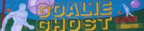
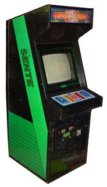
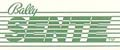

|
Goalie Ghost - 1985 Bally Sente Inc.    I did the programming on this game, along with Ed Rotberg (Battlezone) and Jon Kinsting. I left Atari on a Friday and started on the following Monday at Sente (before it was Bally.) Ed Rotberg had started this game, but was also the VP of Engineering as well. I started working on Monday, was asked to help run the VAX system that day, and was assigned to finish Goalie Ghost for Ed on Tuesday. However, Ed had trouble letting it go, so we basically worked together to finish it. It was great actually to learn on a game where I did not do much of the design because it gave me time to learn the system and how their development environment worked. Not exactly a great game, basically Pong in 3D. But Sente had GREAT artists, so their games looked good. KLOV entry for Goalie Ghost |
  |